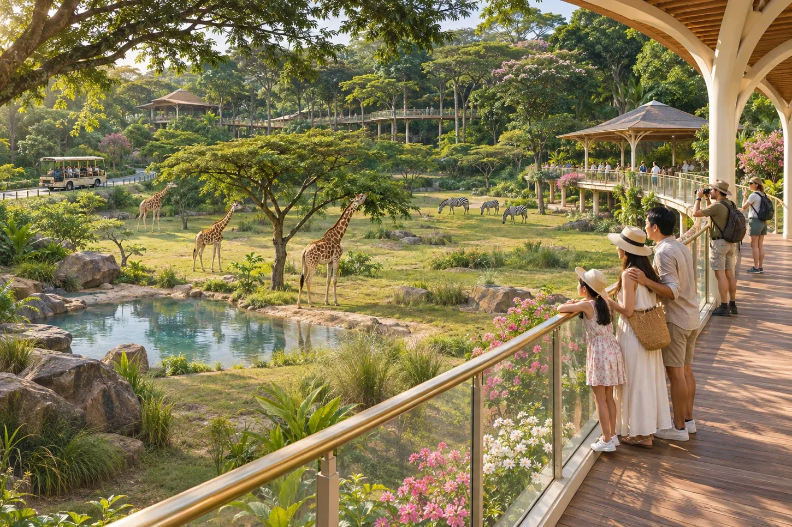
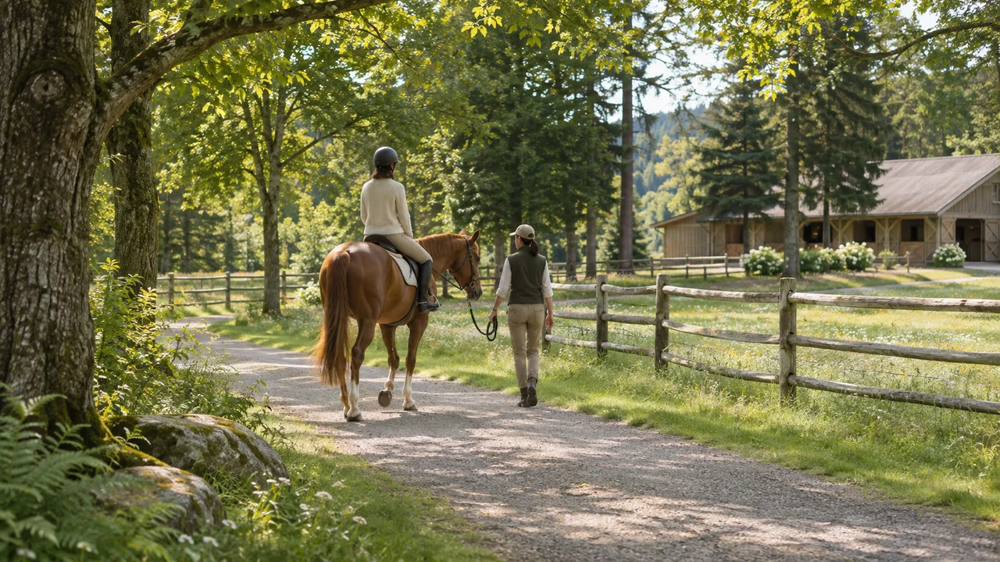
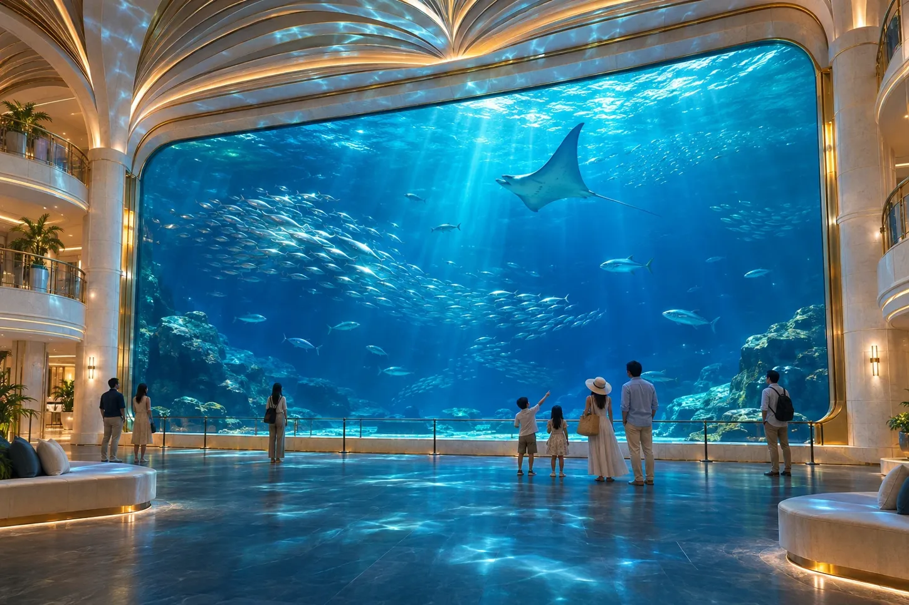
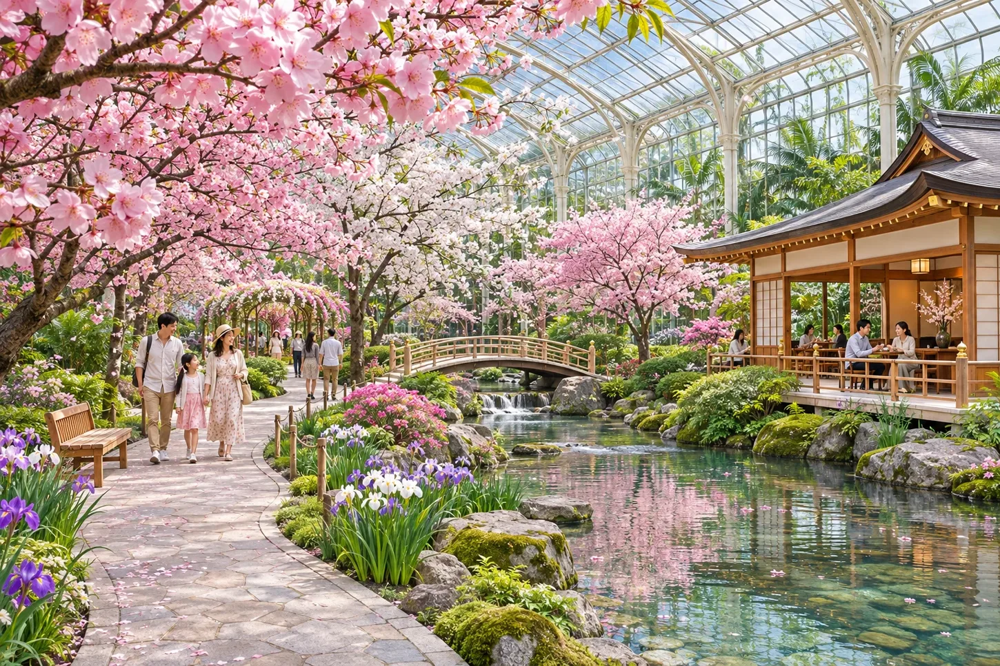
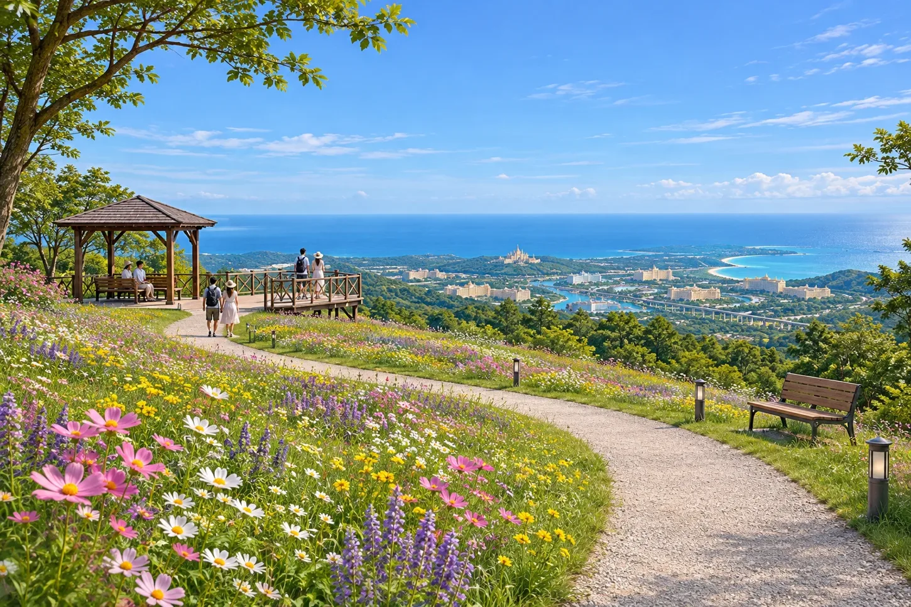

WILDLIFE PARK
エデン・ワイルドガーデン
サバンナを観察車と高架歩道から眺め、熱帯林の鳥たちに会いに行く。動物とのふれあいは、休憩時間を設けた専用の牧場で。
行き方：動物園駅｜パレス中央から列車で約8分

NORTH / EDEN ISLAND
森と、海の生きものに会いに。 サバンナから外洋大水槽、四季の庭へ。森に囲まれた北のエリアでは、気分に合わせて一日を組み立てられます。
THINGS TO DO
WILDLIFE PARK
サバンナを観察車と高架歩道から眺め、熱帯林の鳥たちに会いに行く。動物とのふれあいは、休憩時間を設けた専用の牧場で。
行き方：動物園駅｜パレス中央から列車で約8分

RIDING EXPERIENCE · 企画イメージ
スタッフが手綱を引く、はじめての方向けの短い乗馬体験。動物の休憩と天候を優先するプログラムとして企画しています。対象年齢や実施時間は未定です。
行き方：ワイルドガーデン内｜ふれあい牧場

AQUARIUM
外洋大水槽、海中トンネル、クラゲ回廊を巡る水族館。実際の生きものを観察する展示と、深海環境を再現する演出を、それぞれ楽しめます。
行き方：水族館駅｜パレス中央から列車で約15分

GARDENS
桜の庭と茶屋、夏の森と川辺、秋の紅葉と収穫市、実雪が降る屋内ドーム。四つの庭を巡って、同じ旅で異なる季節を味わえます。
行き方：四季南口駅｜園内は循環交通で移動

NATURE TRAIL
昼の「野花の丘」と夜の「星降る丘」は同じ場所。日が暮れると、花の向こうに広い夜空が開けます。展望地へは停留所から歩きます。
行き方：島の北西｜西マリン駅からシャトル約15〜20分、下車後徒歩約5〜10分
交通時間は作中の目安です。記載がない場合、待ち時間・駅から施設への移動は含みません。
KEEP EXPLORING